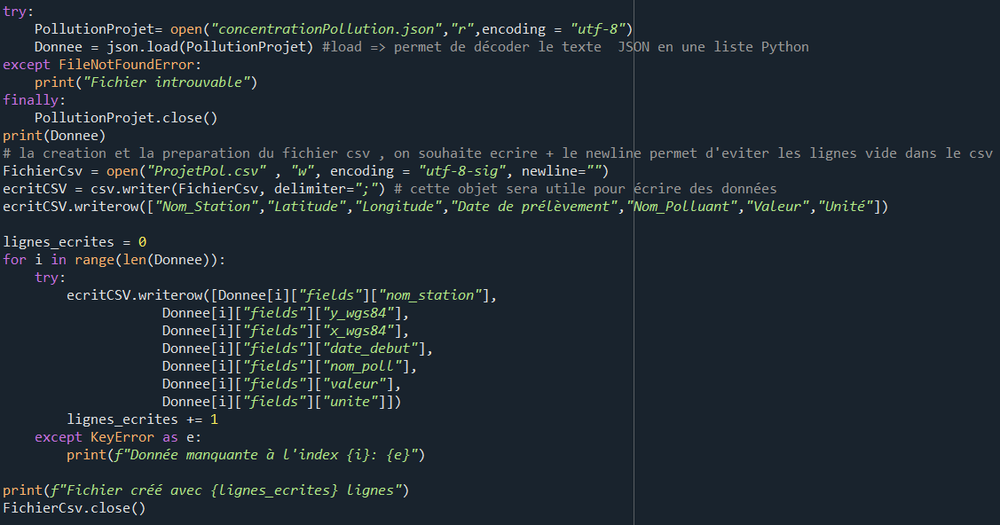
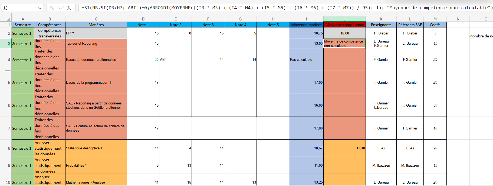
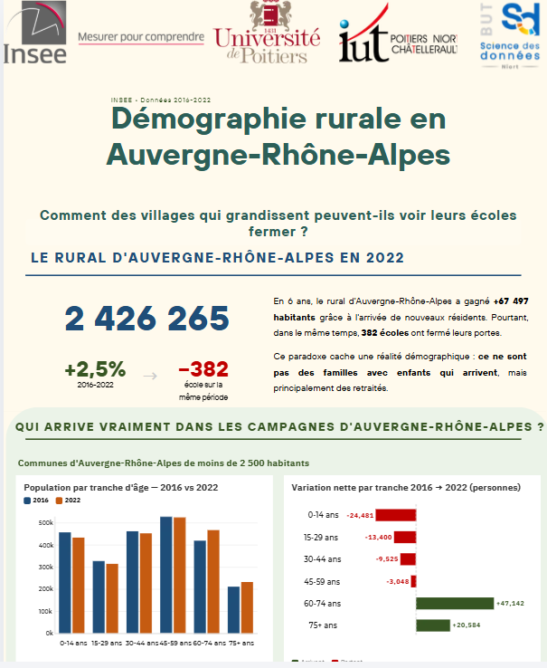
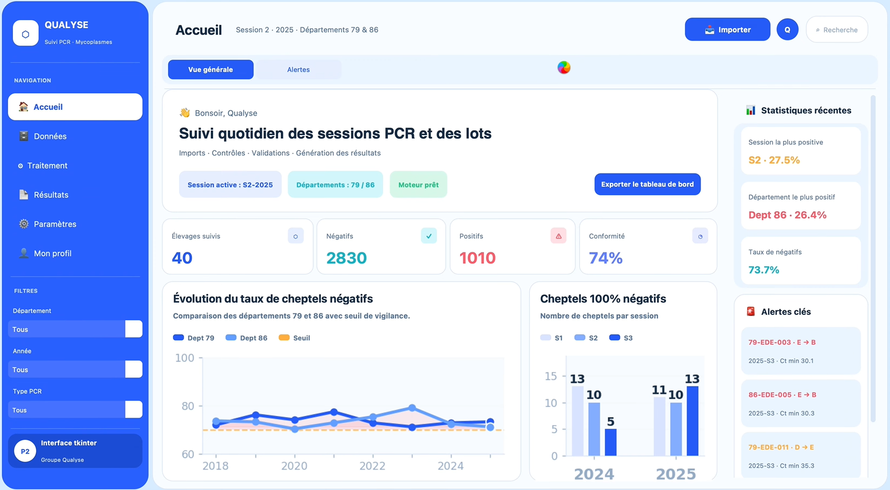

BUT Science des Données · 2025–2026
Mes Projets
15 réalisations universitaires · 1ère année
Ceci est le premier projet que j'ai réalisé cette année. L'objectif était de présenter, lors d'un oral d'environ 15 minutes, l'histoire et l'attractivité d'une ville française pour les jeunes en français, puis d'analyser son économie en anglais. Ce projet m'a permis de découvrir le fonctionnement des travaux universitaires : travailler en groupe, effectuer des recherches approfondies sur un sujet et préparer une présentation orale. Avec mon groupe, nous avons appris à nous organiser, à répartir les tâches et à améliorer notre maîtrise de PowerPoint.
Nous avons étudié Levallois-Perret ainsi que sa ville jumelle belge, Molenbeek. Je me suis personnellement chargé des recherches et de la partie du diaporama consacrées à Molenbeek.

Ce deuxième projet avait pour objectif d'utiliser des données de l'Insee sur les communes françaises afin de réaliser un rapport autour d'une problématique. Avec mon binôme, nous avons étudié le lien entre le vieillissement de la population et le taux de chômage dans les 100 communes de plus de 2 000 habitants ayant les taux de natalité les plus élevés. Nous avons utilisé les données de population de toutes les communes françaises entre 2016 et 2022, puis les avons triées et représentées sous forme de graphiques avec Excel.
Durant ce projet, je me suis principalement occupé de l'analyse des graphiques et de la rédaction du rapport PDF, tandis que mon binôme était chargé du tri des données et de la réalisation des graphiques.

Ce projet m'a permis de découvrir le logiciel Sphinx, utilisé pour créer des questionnaires complets avec une mise en forme personnalisée et des conditions d'affichage. Avant la création du questionnaire, j'ai également appris à construire un organigramme afin d'organiser les questions dans le bon ordre et de définir les liens entre elles selon les réponses données.
L'objectif était de créer un questionnaire portant sur le profil des étudiants : âge, département d'origine, niveau de formation, situation financière, pratiques sportives ou encore temps de sommeil.

Ce projet était particulièrement important car il correspondait à une compétence centrale en Science des Données. L'objectif était de transformer un fichier JSON, peu lisible pour un utilisateur, en un fichier CSV exploitable et facile à comprendre. Pour cela, moi et mon binôme développé un programme Python capable de lire automatiquement les données, de les organiser correctement et de générer un fichier structuré pouvant être ouvert avec Excel.

Excel est un logiciel très utilisé dans les entreprises et les établissements scolaires. Cependant, peu de personnes connaissent réellement le langage VBA qui y est intégré. Au cours de ce projet, j'ai appris à utiliser VBA afin d'automatiser différentes tâches, comme l'ajout, la modification ou la suppression de données, ainsi que la création d'interfaces avec des boutons. L'objectif était de développer un outil permettant de gérer les notes d'un étudiant, de calculer automatiquement ses moyennes, de détecter les absences injustifiées et de déterminer la validation ou non de son semestre.
Je me suis chargé de la création des listes permettant de sélectionner les semestres, les matières et les projets. J'ai également développé les fonctionnalités d'ajout et de modification des notes, ainsi que le système de gestion des absences injustifiées et de validation du semestre.

Ce projet utilisait également le logiciel Sphinx, mais dans un contexte différent. Cette fois, nous ne devions pas créer un questionnaire, mais analyser les réponses d'une enquête portant sur l'utilisation du téléphone chez les étudiants. À partir des données recueillies, nous avons réalisé des graphiques croisés sur Sphinx puis rédigé un rapport autour d'une problématique. Avec mon binôme, nous avons cherché à déterminer si la relation des étudiants avec leur téléphone portable était plutôt bénéfique ou problématique. Nous avons étudié le profil des répondants, leurs habitudes d'utilisation, leur niveau de dépendance ainsi que plusieurs croisements de variables intéressants.
Je me suis chargé de la seconde partie du rapport, consacrée à la dépendance au téléphone et à l'analyse de différents liens entre les variables. Pour cela, j'ai réalisé plusieurs croisements afin de répondre à des questions concrètes, comme par exemple le lien entre le temps passé sur le téléphone et les difficultés de concentration.

Ce projet est l'un de ceux qui m'ont le plus marqué cette année, car il était plus complet et plus complexe que les précédents. L'objectif était de concevoir une base de données de A à Z à partir d'un fichier Excel contenant des informations sur des livraisons, des tournées, des véhicules et leur impact carbone. Nous avons commencé par construire le modèle relationnel puis créé les différentes tables, attributs et relations nécessaires. Ensuite, nous avons importé les données dans une base hébergée sur EasyPHP grâce à un programme Python. Enfin, nous avons développé une application avec Tkinter permettant d'interagir facilement avec la base de données, d'afficher des graphiques, de calculer l'empreinte carbone des véhicules et de consulter les données enregistrées.
Ma partie du travail concernait la création et le remplissage des tables, que j'ai effectué en langage SQL. J'ai aussi optimisé l'application pour m'assurer qu'elle ne rame pas sur windows.

Un des projets que j'ai eu le plus de difficultés à réaliser. Nous disposions de données Excel sur les transactions immobilières réalisés depuis 2021 dans les communes de la Communauté d'Agglomération Niortaise. Avec le logiciel R, nous devions cherché la relation entre le prix du logement et d'autres variables en calculant le coefficient de détermination en croisant certaines variables comme les communes, le prix, la surface, le type de logement... Tout cela pour pouvoir prédire les prix manquants de certains logements.

Analyser les performances d'une entreprise est une compétence importante pour comprendre sa situation financière et aider à la prise de décision. Dans ce projet, nous disposions du compte de résultat de l'entreprise Fleury-Michon. Notre objectif était d'analyser son chiffre d'affaires, de calculer les taux de variation, d'établir un diagnostic de sa situation et de réaliser un tableau de bord résumant les principaux résultats.
Je me suis chargé de rédiger le rapport d'analyse de l'entreprise. J'ai interprété les chiffres et les graphiques obtenus afin d'expliquer l'évolution de sa situation financière.

Power BI est un logiciel que j'apprécie particulièrement pour la création de tableaux de bord et la visualisation de données. L'objectif de ce projet était de développer notre maîtrise de l'outil en comparant les données de deux pays européens de notre choix. Nous avons choisi la Suède et la Roumanie, deux pays présentant des différences importantes sur les plans géographique, culturel et démographique. À l'aide de graphiques et d'indicateurs (KPI), nous avons comparé plusieurs thèmes comme la population, la famille, la santé et la sécurité.
Ma mission concernait la partie "famille". J'ai effectué des recherches et réalisé des comparaisons sur différents indicateurs tels que l'âge moyen au mariage, le taux de fécondité, le nombre de divorces, les ménages composés d'une seule personne et les naissances hors mariage.

Ce projet portait sur des données Parcoursup contenant les données de chaque formation (nom, localisation, nombre d'admis...). Nous devions choisir sur quelle partie des données travailler que ce soit un type de licence ou une zone géographique. Nous avons fait un graphique par type de variable (quantitative et qualitative) et par croisement de type de variables (statut de l'école, sélectivité, nombre d'admis...). Ce projet avait aussi pour but d'améliorer notre maîtrise du logiciel R.

Ce projet a pour but d'utiliser des méthodes d'échantillonnage pour faire des estimations sur un échantillon population. Durant ce projet, nous avons utilisé les données de la population de la région Bourgogne-Franche-Comté. Nous avons calculé et prédit des effectifs de population théorique, les avons divisé par strates.

Le concours Dataviz réunit les étudiants en BUT Science des Données de toute la France autour d'un défi de visualisation de données. En groupe de quatre, nous devions réaliser une infographie en une seule journée. Ce projet avait pour objectif de développer nos compétences en datavisualisation tout en mettant à l'épreuve notre organisation et notre capacité à travailler efficacement dans un temps limité. Nous avons travaillé à partir de données de l'Insee portant sur le vieillissement de la population et la baisse des naissances observée depuis plusieurs années. Notre problématique s'intéressait aux conséquences de ces évolutions démographiques, notamment à la fermeture d'écoles dans la région Auvergne-Rhône-Alpes en raison de la diminution du nombre de jeunes habitants.

Ce projet a probablement été le plus complexe de mon année. Qualyse, un laboratoire public sanitaire de Nouvelle-Aquitaine, nous a confié la réalisation d'une application destinée à des utilisateurs ne possédant aucune connaissance en programmation. Cette application devait permettre d'analyser les résultats de tests PCR réalisés sur des cheptels de chèvres afin de détecter certaines bactéries. Répartis en groupe de cinq, nous avons organisé le travail autour de plusieurs étapes : planification du projet, nettoyage des données, analyses statistiques, création de graphiques, développement de l'application, gestion des données et rédaction du rapport final. Nous étions aussi testé avec une présentation entièrement en anglais de notre projet, les étapes et l'organisation
J'ai principalement réalisé les calculs statistiques avec Python et créé plusieurs graphiques permettant de visualiser l'évolution des cheptels selon différents critères, comme les saisons, les départements ou les classes de cheptels. Je me suis également chargé de la rédaction du rapport PDF, de l'intégration des graphiques et de l'analyse des résultats obtenus.

Voici mon dernier projet, celui sur lequel vous êtes en train de naviguer, le portfolio. Ce projet marque la fin de chaque année. Une analyse rétrospective de chaque année que j'ai passé dans cette formation, ce que j'ai appris, ce que j'ai acquis en compétence. C'est le projet qui permet aux recruteurs d'en apprendre plus sur les candidats. J'ai aimé faire ce portfolio car il me permet de revoir d'anciens projets de manière plus profonde, de comprendre ce que j'ai fait et sur quels points je me suis amélioré. Cela m'a appris à utiliser le langage HTML et le CSS. Ce portfolio est hébergé sur mon profil GitHub que vous pouvez retrouver dans la page contact.